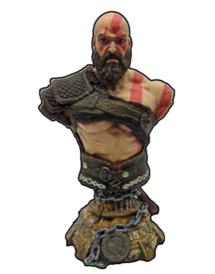
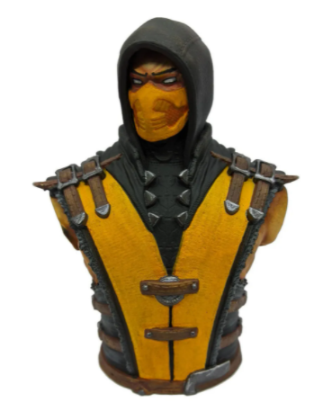
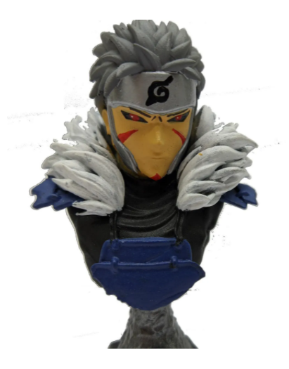
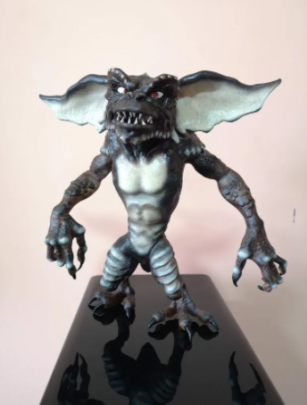
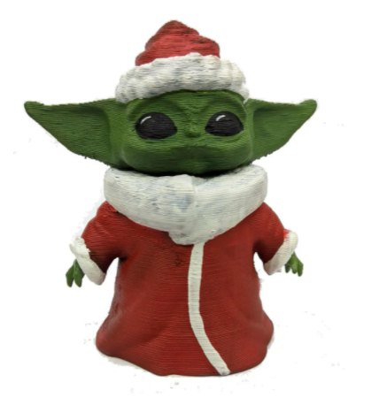

SERVICIO PROFESIONAL IMPRESIÓN 3D PARA EMPRESAS EN CHILE En Pr1nt3D
impresiones 3D fabricamos tus ideas al mejor precio, con experiencia desde 2018.
Contáctenos y te enviaremos un presupuesto.
| IMAGEN DEL PRODUCTO | DESCRIPCION | VALOR |
|---|---|---|
|  |
KratosSemidiós espartano, Kratos, quien se enfrenta a diversos personajes de la mitología griega y nórdica, tanto héroes (Heracles, Teseo, Perseo, etc.); especies mitológicas (gorgonas, arpías, o minotauros); dioses griegos (Ares, Poseidón, Zeus, entre otros), titanes (como Cronos) y dioses primordiales (como Gaia). Aunque el guerrero espartano acostumbra enemistad con la mayoría de los dioses, recibe ayuda de muchos de ellos en algún momento de cada entrega, en especial de Atenea. |
$9.990 |
|  |
ScorpionHanzo Hasashi, más conocido como Scorpion es un personaje ficticio de la saga de videojuegos Mortal Kombat. Scorpion es el personaje más popular en la serie de Mortal Kombat junto con Sub-Zero. |
$9990 |
|  |
Segundo HokageTobirama Senju (千手扉間, Senju Tobirama, significado en español "Una puerta entre mil") fue el Segundo Hokage (二代目火影, Nidaime Hokage - "Segunda Sombra del Fuego") de Konohagakure. También fue el hermano menor de Hashirama Senju y tío abuelo de Tsunade y Nawaki. |
$9990 |
|  |
GremblinsTobirama Senju (千手扉間, Senju Tobirama, significado en español "Una puerta entre mil") fue el Segundo Hokage (二代目火影, Nidaime Hokage - "Segunda Sombra del Fuego") de Konohagakure. También fue el hermano menor de Hashirama Senju y tío abuelo de Tsunade y Nawaki. |
$9990 |
|  |
Baby YodaGrogu (también conocido como el Niño y llamado normalmente como Bebé Yoda por los fanáticos y los medios de comunicación), es un personaje ficticio de la serie de televisión original The Mandalorian basada en Star Wars y emitida en Disney+. |
$9990 |